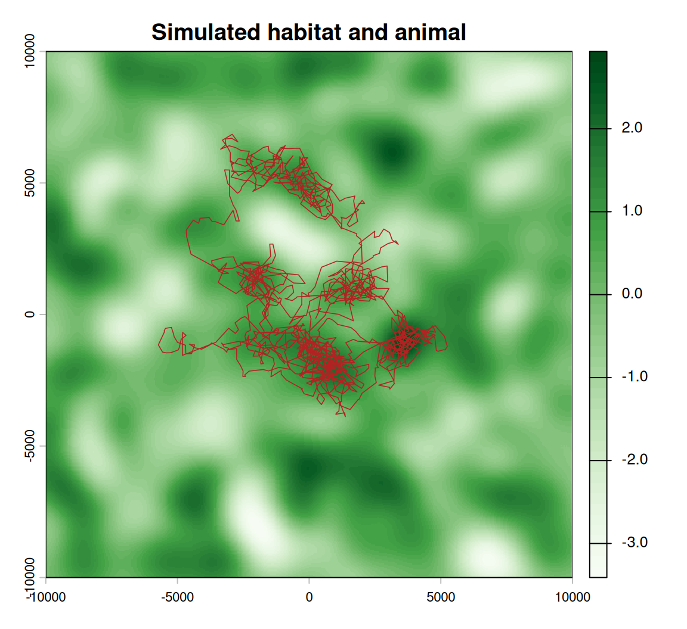

Practical 7 — Habitat selection on the move
Session 7 · Resource selection and step selection functions
Goals. Fit a resource selection function and a step selection function to the same fisher; interpret both with relative selection strength; recover the realised movement kernel; test whether habitat changes how the animal moves; and find out which method recovers a known selection coefficient from a simulated animal.
Time: ~70 minutes. Packages: amt, terra, survival, dplyr, ggplot2.
The data: fishers in New York
amt ships GPS tracks of four fishers (Pekania pennanti) from LaPoint et al. (2013), with three rasters: land use (GlobCover, 300 m), elevation, and human population density.
data(amt_fisher)
amt_fisher |> count(name)
#> # A tibble: 4 × 2
#> name n
#> <chr> <int>
#> 1 Leroy 919
#> 2 Lucile 1349
#> 3 Lupe 3004
#> 4 Ricky T 8958
cov <- get_amt_fisher_covars()
# GlobCover classes 40-100 and 160-170 are forest
forest <- cov$landuse %in% c(40:100, 160:170)
covs <- c(forest,
resample(cov$elevation, forest),
resample(cov$popden, forest))
names(covs) <- c("forest", "elevation", "popden")
covs
#> class : SpatRaster
#> size : 54, 59, 3 (nrow, ncol, nlyr)
#> resolution : 220, 302 (x, y)
#> extent : 1775801, 1788781, 2398484, 2414792 (xmin, xmax, ymin, ymax)
#> coord. ref. : +proj=aea +lat_0=23 +lon_0=-96 +lat_1=29.5 +lat_2=45.5 +x_0=0 +y_0=0 +datum=NAD83 +units=m +no_defs
#> source(s) : memory
#> names : forest, elevation, popden
#> min values : FALSE, 49.067795, 23.639465
#> max values : TRUE, 147.865814, 4051.015869We work with Lupe, sampled every ~2 minutes, resampled to a regular 10-minute interval.
lupe <- amt_fisher |>
filter(name == "Lupe") |>
track_resample(rate = minutes(10), tolerance = minutes(2)) |>
filter_min_n_burst(min_n = 3)
nrow(lupe)
#> [1] 774Task 1 — A resource selection function
Used locations versus random points within Lupe’s range (third order).
set.seed(1)
rsf_dat <- lupe |>
random_points(n = nrow(lupe) * 10) |>
extract_covariates(covs) |>
mutate(forest = factor(forest, levels = c(0, 1), labels = c("other", "forest")),
elevation_z = as.numeric(scale(elevation)),
popden_z = as.numeric(scale(popden)),
w = ifelse(case_, 1, 5000))
rsf <- glm(case_ ~ forest + elevation_z + popden_z,
data = rsf_dat, family = binomial(), weights = w)
round(summary(rsf)$coefficients, 3)
#> Estimate Std. Error z value Pr(>|z|)
#> (Intercept) -12.428 0.577 -21.524 0.000
#> forestforest 1.601 0.579 2.767 0.006
#> elevation_z 0.245 0.035 6.965 0.000
#> popden_z -0.108 0.037 -2.889 0.004Your turn
1a. Express each coefficient as relative selection strength with a 95% CI.
b <- coef(rsf)[-1]
se <- summary(rsf)$coefficients[-1, 2]
data.frame(term = names(b), RSS = round(exp(b), 2),
lower = round(exp(b - 1.96 * se), 2), upper = round(exp(b + 1.96 * se), 2))
#> term RSS lower upper
#> forestforest forestforest 4.96 1.60 15.42
#> elevation_z elevation_z 1.28 1.19 1.37
#> popden_z popden_z 0.90 0.83 0.97Relative to what is available within her range, Lupe’s locations are several times more likely to fall in forest than in other cover, more likely at higher elevation (per standard deviation), and less likely where people are dense. The intercept is meaningless — it depends only on how many available points you drew.
Task 2 — The same fisher, as a step selection function
set.seed(2)
ssf_dat <- lupe |>
steps_by_burst() |>
random_steps(n_control = 10) |>
extract_covariates(covs, where = "both") |>
mutate(forest_end = factor(forest_end, levels = c(0, 1), labels = c("other", "forest")),
forest_start = factor(forest_start, levels = c(0, 1), labels = c("other", "forest")))
ssf_dat |> select(step_id_, case_, sl_, ta_, forest_end, elevation_end) |> head(11)
#> # A tibble: 11 × 6
#> step_id_ case_ sl_ ta_ forest_end elevation_end
#> * <dbl> <lgl> <dbl> <dbl> <fct> <dbl>
#> 1 3 TRUE 99.7 0.216 forest 105.
#> 2 3 FALSE 42.9 2.87 forest 105.
#> 3 3 FALSE 172. -2.70 forest 98.9
#> 4 3 FALSE 132. -1.59 forest 97.9
#> 5 3 FALSE 54.7 -0.242 forest 105.
#> 6 3 FALSE 19.5 -1.22 forest 105.
#> 7 3 FALSE 210. -1.84 forest 97.8
#> 8 3 FALSE 72.2 -0.979 forest 105.
#> 9 3 FALSE 86.5 -1.59 forest 97.9
#> 10 3 FALSE 353. -0.341 forest 99.6
#> 11 3 FALSE 11.3 -0.199 forest 105.One stratum: the step Lupe took (case_ = TRUE) and ten she could have taken from the same point at the same moment.
issf <- fit_issf(ssf_dat,
case_ ~ forest_end + elevation_end + popden_end +
sl_ + log(sl_) + cos(ta_) + strata(step_id_),
model = TRUE)
round(summary(issf$model)$coefficients[, c(1, 3, 5)], 4)
#> coef se(coef) Pr(>|z|)
#> forest_endforest 1.4803 0.7378 0.0448
#> elevation_end 0.0679 0.0196 0.0005
#> popden_end -0.0010 0.0008 0.2009
#> sl_ -0.0001 0.0005 0.8262
#> log(sl_) 0.0684 0.0629 0.2771
#> cos(ta_) 0.0361 0.0670 0.5895Your turn
2a. Compute the RSS for a step ending in forest versus other cover, with a confidence interval, using log_rss().
x1 <- data.frame(forest_end = factor("forest", levels = c("other", "forest")),
elevation_end = mean(ssf_dat$elevation_end, na.rm = TRUE),
popden_end = mean(ssf_dat$popden_end, na.rm = TRUE),
sl_ = 100, ta_ = 0)
x2 <- x1
x2$forest_end <- factor("other", levels = c("other", "forest"))
rss <- log_rss(issf, x1, x2, ci = "se")
exp(rss$df[, c("log_rss", "lwr", "upr")])
#> log_rss lwr upr
#> 1 4.39433 1.034846 18.65991Given two equally reachable destinations, identical in elevation and population density, Lupe is roughly four times as likely to step into forest. The interval is wide: forest covers most of this landscape, so there are few strata where forest and non-forest are both on offer — a reminder that selection can only be estimated where there is choice.
Task 3 — The realised movement kernel
The control steps were drawn from a tentative gamma and von Mises fitted to the observed steps. The movement terms in the model correct them.
upd_sl <- update_gamma(sl_distr(ssf_dat),
beta_sl = coef(issf)[["sl_"]],
beta_log_sl = coef(issf)[["log(sl_)"]])
upd_ta <- update_vonmises(ta_distr(ssf_dat), beta_cos_ta = coef(issf)[["cos(ta_)"]])
data.frame(
quantity = c("mean step (m)", "von Mises kappa"),
tentative = round(c(prod(unlist(sl_distr(ssf_dat)$params)), ta_distr(ssf_dat)$params$kappa), 2),
realised = round(c(prod(unlist(upd_sl$params)), upd_ta$params$kappa), 2)
)
#> quantity tentative realised
#> 1 mean step (m) 147.26 154.38
#> 2 von Mises kappa 0.34 0.38Here the two kernels are close, and the movement coefficients are not significant: once selection is accounted for, Lupe’s movement is well described by the distributions the controls were drawn from. When they differ, the realised kernel is the one to use for prediction or simulation — it is the animal’s movement with the habitat effect removed.
Task 4 — Does habitat change how she moves?
Interact the movement terms with the habitat at the start of the step. First the obvious candidate, forest:
issf_forest <- fit_issf(ssf_dat,
case_ ~ forest_end + elevation_end + popden_end +
sl_ + log(sl_) + cos(ta_) +
sl_:forest_start + cos(ta_):forest_start +
strata(step_id_),
model = TRUE)
round(summary(issf_forest$model)$coefficients[, c(1, 2, 5)], 3)
#> coef exp(coef) Pr(>|z|)
#> forest_endforest 1.284 3.611000e+00 0.079
#> elevation_end 0.067 1.070000e+00 0.001
#> popden_end -0.001 9.990000e-01 0.209
#> sl_ 0.105 1.111000e+00 0.994
#> log(sl_) 0.069 1.072000e+00 0.271
#> cos(ta_) 25.751 1.525347e+11 0.993
#> sl_:forest_startforest -0.106 9.000000e-01 0.994
#> cos(ta_):forest_startforest -25.721 0.000000e+00 0.993Your turn
4a. Look at the standard errors of the two interaction terms. What went wrong?
Standard errors in the tens or thousands mean the model cannot estimate those terms. Count the information:
Almost every observed step starts in forest. With a couple of non-forest starts, there is nothing to compare: the likelihood is flat and the optimiser wanders off towards infinity (quasi-complete separation). The coefficient is not “huge”; it is undefined.
Always check that the covariate you interact with varies among observed steps before you interpret an interaction.
Population density does vary. Standardise it and interact it with both step terms (they define the gamma distribution together):
ssf_dat <- ssf_dat |> mutate(pop_start_z = as.numeric(scale(popden_start)))
issf_pop <- fit_issf(ssf_dat,
case_ ~ forest_end + elevation_end + popden_end +
sl_ + log(sl_) + cos(ta_) +
sl_:pop_start_z + log(sl_):pop_start_z +
strata(step_id_),
model = TRUE)
round(summary(issf_pop$model)$coefficients[, c(1, 3, 5)], 4)
#> coef se(coef) Pr(>|z|)
#> forest_endforest 1.4758 0.7385 0.0457
#> elevation_end 0.0677 0.0195 0.0005
#> popden_end -0.0010 0.0008 0.2014
#> sl_ -0.0003 0.0006 0.5710
#> log(sl_) 0.0848 0.0647 0.1901
#> cos(ta_) 0.0358 0.0670 0.5935
#> sl_:pop_start_z -0.0015 0.0007 0.0270
#> log(sl_):pop_start_z 0.1174 0.0757 0.12094b. The two interaction terms work together. Translate them into Lupe’s mean step length where population density is low (−1 SD) and high (+1 SD).
b <- coef(issf_pop)
kernel_at <- function(z) {
g <- update_gamma(sl_distr(ssf_dat),
beta_sl = b[["sl_"]] + z * b[["sl_:pop_start_z"]],
beta_log_sl = b[["log(sl_)"]] + z * b[["log(sl_):pop_start_z"]])
data.frame(popden_start_sd = z, mean_step_m = round(g$params$shape * g$params$scale))
}
bind_rows(lapply(c(-1, 0, 1), kernel_at))
#> popden_start_sd mean_step_m
#> 1 -1 170
#> 2 0 152
#> 3 1 141Where more people live, Lupe takes shorter steps — she moves more slowly through the populated parts of her range. The effect is modest, and one animal is one animal; but this is exactly the kind of habitat-mediated movement an RSF cannot express and an iSSA can.
Always interpret step-length interactions through the implied distribution, never from one coefficient: sl_ and log(sl_) change the scale and shape together, and only their combination has a meaning.
Task 5 — Is there enough contrast?
A step selection function can only detect selection for a covariate that varies within one step’s reach. The land-use raster has 300 m cells.
same_cell <- cellFromXY(covs, cbind(ssf_dat$x1_, ssf_dat$y1_)) ==
cellFromXY(covs, cbind(ssf_dat$x2_, ssf_dat$y2_))
c(median_step_m = median(ssf_dat$sl_[ssf_dat$case_]),
share_in_start_cell = round(mean(same_cell, na.rm = TRUE), 2))
#> median_step_m share_in_start_cell
#> 128.3752 0.4800About half the control steps never leave the cell they started in: for those strata the land-use value is identical for the used step and its alternatives, and they carry no information about forest selection. Elevation, on a much finer grid, is estimated far more precisely. When covariates are coarser than your steps, either get finer covariates or ask a coarser question — never “solve” it by quietly making the steps longer.
Task 6 — Ground truth: which method recovers a known coefficient?
R/simulators.R contains simulate_ssf(): an animal that moves with a fixed kernel and, at each step, chooses among 30 possible next steps with probability proportional to \(\exp(\beta \times \text{habitat})\). That is exactly the process an SSF assumes. We set \(\beta = 1.5\).
source("R/simulators.R")
hab <- simulate_habitat() # a smooth, standardised habitat surface
sim <- simulate_ssf(1500, hab, beta = 1.5, start = c(0, 0))
sim$t <- as.POSIXct("2026-01-01", tz = "UTC") + (sim$step - 1) * 600
sim_trk <- make_track(sim, x, y, t)plot(hab, col = hcl.colors(50, "Greens", rev = TRUE), main = "Simulated habitat and animal")
lines(sim$x, sim$y, col = "firebrick", lwd = 0.8)
Your turn
6a. Fit an SSF and an RSF to the simulated animal. Which recovers \(\beta = 1.5\)? 6b. Repeat with \(\beta = 0\).
compare_methods <- function(beta) {
s <- simulate_ssf(1500, hab, beta = beta, start = c(0, 0))
s$t <- as.POSIXct("2026-01-01", tz = "UTC") + (s$step - 1) * 600
tr <- make_track(s, x, y, t)
set.seed(3)
ssf <- tr |> steps() |> random_steps(n_control = 15) |> extract_covariates(hab, where = "end")
m_ssf <- fit_issf(ssf, case_ ~ habitat + sl_ + log(sl_) + cos(ta_) + strata(step_id_), model = TRUE)
rsf <- tr |> random_points(n = nrow(tr) * 10) |> extract_covariates(hab) |>
mutate(w = ifelse(case_, 1, 5000))
m_rsf <- glm(case_ ~ habitat, data = rsf, family = binomial(), weights = w)
data.frame(true_beta = beta,
SSF = round(coef(m_ssf)[["habitat"]], 2),
SSF_se = round(sqrt(diag(vcov(m_ssf$model)))[["habitat"]], 2),
RSF = round(coef(m_rsf)[["habitat"]], 2),
RSF_se = round(summary(m_rsf)$coefficients["habitat", 2], 2))
}
bind_rows(compare_methods(1.5), compare_methods(0))
#> true_beta SSF SSF_se RSF RSF_se
#> 1 1.5 1.42 0.11 1.02 0.03
#> 2 0.0 -0.04 0.09 -0.06 0.03The SSF recovers the true coefficient (within its standard error) because it is fitted to the same process that generated the data: each step compared with its own reachable alternatives.
The RSF does not, and it is not supposed to. It compares locations with everywhere in the range, as if the animal could teleport; the answer mixes selection with the constraint of having to walk. Note also its standard error: three to four times smaller than the SSF’s, for a less accurate estimate. The RSF treats 1,500 autocorrelated positions as independent, so it is confidently wrong.
That is not an argument against RSFs — for broad-scale questions about where ranges sit they are the right tool. It is an argument for knowing which question each method answers, and simulation with a known truth is how you find out.
To hand in
Fit the iSSA of Task 2 to a second fisher (Leroy, Lucile or Ricky T). Report the RSS for forest with its CI and one paragraph comparing it with Lupe’s. Is the difference biological, or could it come from how much choice each animal had (Task 5)?
Self-check
Removing strata(step_id_) from an SSF formula:
The stratum is the design: each used step is compared only with the alternatives from the same place and time. Without it, a step in the forest at dawn is compared with control steps from the other side of the range days later — the local, time-specific availability that made the SSF worth fitting is gone.
An RSF gives a smaller standard error than an SSF for the same animal. Does that make it more reliable?
In the ground-truth task the RSF’s standard error was several times smaller and its estimate further from the truth. Precision you did not earn is worse than honest uncertainty: it makes a wrong answer look certain.
Before Session 8
- McClintock et al. (2020), Ecology Letters 23:1878 — sections 1–3.
- Prepare your 3–5 minute mini-project pitch for the end of Session 8.